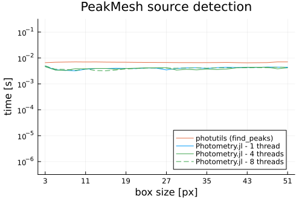

Source Detection
The module provides tools and algorithms for detecting and extracting point-like sources.
Performance
Below are some benchmarks comparing the source detection capabilities of Photometry.jl with the photutils astropy package. The benchmark code can be found in the bench folder.
Julia Version 1.12.6
Commit 15346901f00 (2026-04-09 19:20 UTC)
Build Info:
Official https://julialang.org release
Platform Info:
OS: Linux (x86_64-linux-gnu)
CPU: 12 × AMD Ryzen 5 PRO 6650U with Radeon Graphics
WORD_SIZE: 64
LLVM: libLLVM-18.1.7 (ORCJIT, znver3)
GC: Built with stock GC
Threads: 1 default, 1 interactive, 1 GC (on 12 virtual cores)
API/Reference
Photometry.Detection.extract_sources — Function
extract_sources(::SourceFinder, data, [error]; sorted=true)Uses method to find and extract point-like sources.
Returns a TypedTables.Table with positions and information related to the method. For instance, using PeakMesh returns a table a column for the peak values.
data is assumed to be background-subtracted. If error is provided it will be propagated into the detection algorithm. If sorted is true the sources will be sorted by their amplitude.
error should be nothing or an AbstractArray defining the expected error in each pixel. If nothing is provided, any local maximum is returned, including negative values. The default is zeros(data), which means only positive pixels are returned.
See Also
Example
julia> data = rand(2048, 2048);
julia> pm = PeakMesh((7, 7), 3.0)
PeakMesh
box_size: Tuple{Int64, Int64}
nsigma: Float64 3.0
julia> sources = extract_sources(pm, data)
Table with 3 columns and 86004 rows:
x y value
┌─────────────────────
1 │ 1120 1285 1.0
2 │ 1751 845 1.0
3 │ 1670 506 1.0
4 │ 1792 666 1.0
5 │ 314 1456 0.999999
6 │ 1723 432 0.999999
7 │ 209 322 0.999999
8 │ 1872 334 0.999999
9 │ 940 1269 0.999999
10 │ 1624 493 0.999998
11 │ 436 1202 0.999998
12 │ 363 107 0.999998
13 │ 1355 617 0.999998
14 │ 1355 179 0.999998
15 │ 1916 165 0.999997
16 │ 931 1963 0.999997
17 │ 1246 215 0.999996
⋮ │ ⋮ ⋮ ⋮